搬到英国时1，我已经做好了改变美式生活习惯的准备。在美国，我还在用守旧的华氏温度，而英国人用的是更科学的摄氏度。在美国，距离单位用的是特立独行的英里（每英里等于5 280英尺），而英国人用的是整数的千米制（每千米等于1 000米）。在美国，我平时喝的是星巴克的焦糖拿铁，到了英国，可能得换成喝茶了。所以，我清楚地知道，换了一个国家生活就得努力学习这个国家的生活方式，我必然会经历一个艰难的适应过程。
但有一种文化冲击是我万万没想到的：纸张的尺寸。
和其他美国佬一样，我也是用着“信纸”长大的，信纸宽8.5英寸、高11英寸，所以有时人们会叫它 “八点五乘十一”，这个名字更容易记一些。假如我以前能认真想想，我早该发现别的国家都用厘米代替英寸了，信纸尺寸当然不适合他们了。虽然我觉得“八点五乘十一”这个名字冗长得要命，但与“二十一又五分之三乘二十七又二十分之十九”相比，还真是小巫见大巫了。
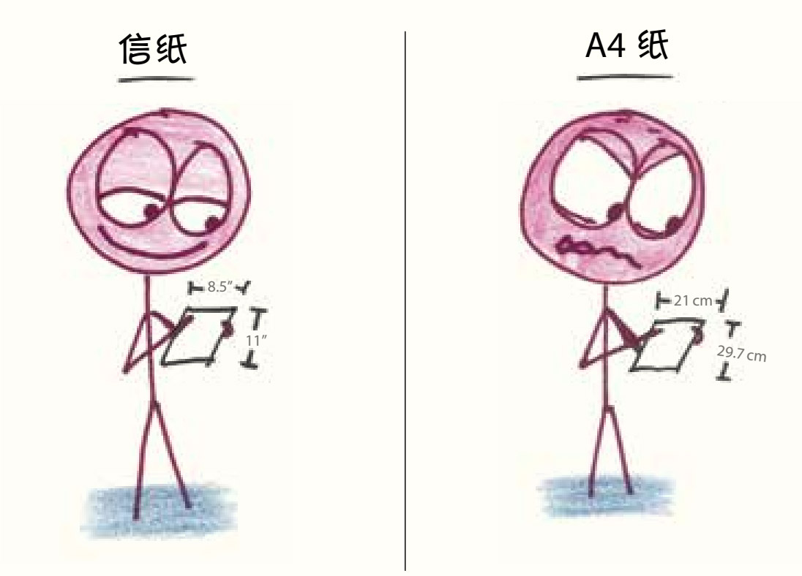
然而，我看到英国人用的纸时，立马产生了强烈的反感和抵触情绪。这种纸有个更无趣的叫法——“A4纸”。它太瘦了，就像一条时髦的牛仔裤，但我早就习惯了宽松的喇叭裤，所以对苗条的欧洲人这种连纸张都要以瘦为美的审美观感到恼火。信纸的长度比宽度大30%，很明显A4纸的长宽比和信纸的不同，一看就不合理。
在查A4纸尺寸之前，我估计它是22.5厘米×28厘米，或者可能是23厘米×30厘米。这样的数字既漂亮又整洁，非常适合循规蹈矩的英国人。
结果都不是，是21厘米×29.7厘米。
这个比例是什么鬼？
我用29.7除以21，简化后求出比例大概是1.41。作为一名数学老师，我很快就认出了这个数字：大约等于√2。就在那一刻，我气得快冒烟了。
√2是个无理数（irrational），这个词的字面意思就是“不合理的
造纸厂选了一个最不成比例的比例。
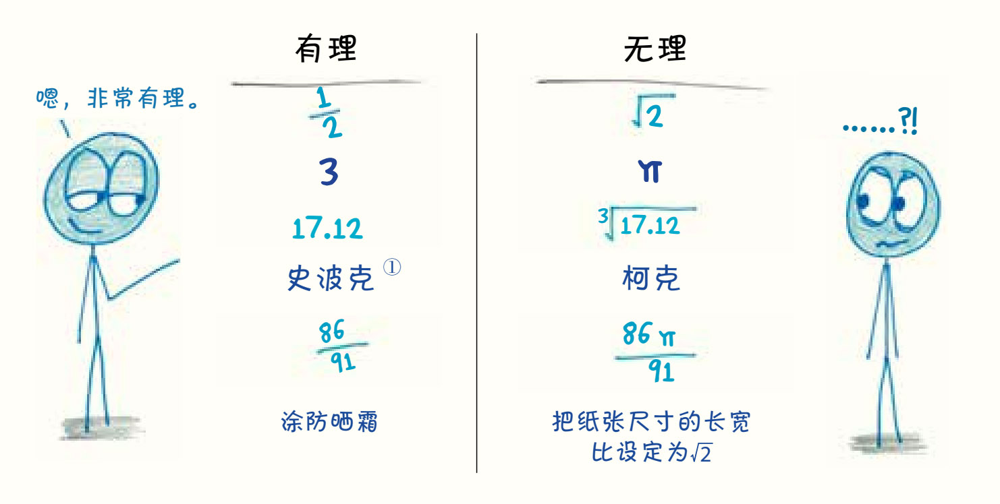
①史波克（Spock）和柯克（Kirk）都是美国科幻剧集《星际迷航》（Star Trek）中的角色。
在生活中，我们遇到的数字通常有两类。一是整数，比如：我有3个孩子，孩子们每天早上要吃5盒麦片，孩子们衣服上的污渍有17种不同的颜色；二是两个整数的比值，比如：我们把可支配收入的
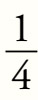
花在了乐高玩具上，有娃的家庭家里墙上有涂鸦的概率比没有娃的家庭多17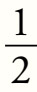
倍，嘿，我的头发怎么白了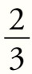
？（我可能得解释一下，日常生活中你见到的小数都不过是伪装成小数的整数之比，它们都可以写作分数。例如，0.71美元就是1美元的
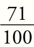
。）但是，也有一些野蛮古怪的数字无法被归于这两类。它们不是整数，也不能写成整数之比（我12岁的学生亚当给它们起了个绰号叫“反整数”2，他比我聪明得多）。没有任何一个分数或小数可以准确地反映这些数字，它们总是等于这些分数和小数之间的某个数。
√2这个数和它自身相乘时会得到2。请看：
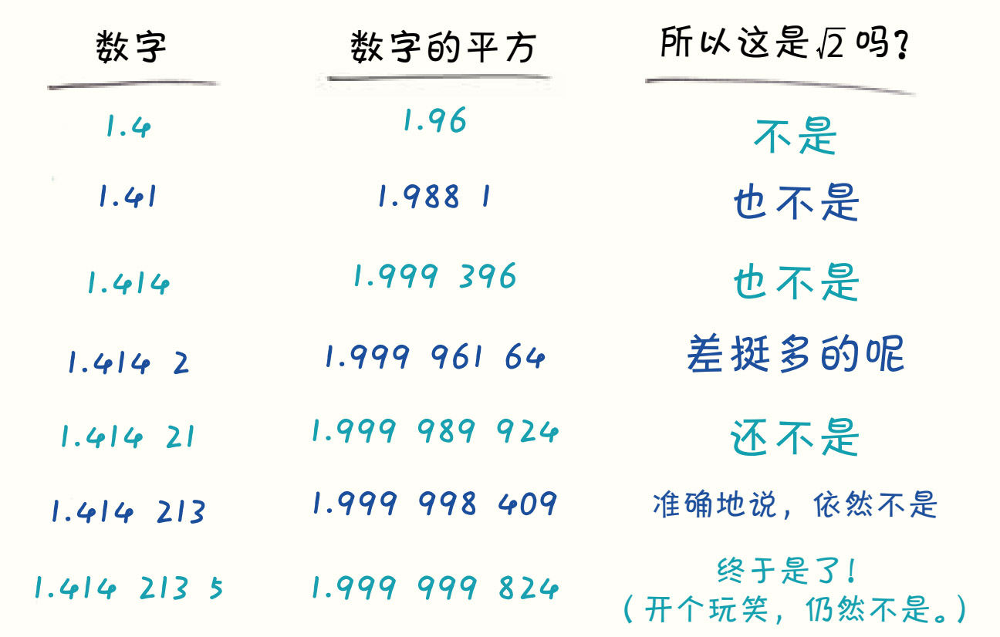
在这个世界上，没有完全等于√2的小数，也没有完全等于√2的分数。
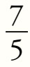
？还算接近。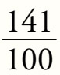
？更接近了。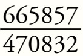
？简直触手可及。但不管有多接近，这些数字都不是正好等于√2，也不会有分数正好等于√2。√2和π一样，都是无理数。据说毕达哥拉斯学派那些崇拜分数的信徒发现√2不能写成分数时，简直痛不欲生、如丧考妣，最后还淹死了公开这一发现的数学家。
√2不能被写作分数，也就不能被写作两个整数之比，因此欧洲的造纸厂选择√2，就是选了一个永远无法实现的比例。这个井底之蛙的决定真的糟透了。
那段日子，我一直处在躁郁和愤怒的状态中，每次摸到这些愚蠢的纸张，我就感觉像摸到了毒漆藤，又像是摸到了书桌下粘着的口香糖，发自内心地烦躁和厌恶。我有时候会拿这开玩笑，但越假装轻松，就越显得我在苦中作乐——我太在乎这件事了。
直到有一天，我意识到自己错了。
当然，这个错误不是我自己发现的，而是有人告诉了我A4纸的神奇特性。
它属于一个团队。
A4纸的大小正好是A5纸的2倍，是A6纸的4倍，是小可爱A7纸的8倍。同时，它的大小还正好是A3纸的
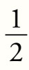
，是A2纸的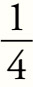
，是大巨人A1纸的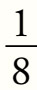
。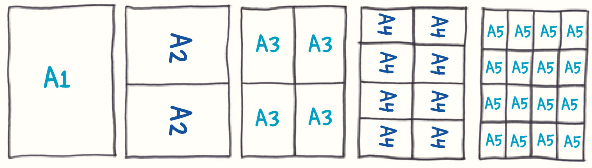
美国人用的信纸是一座孤岛，它的规格只为特定的文化习俗服务，这种
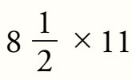
的信纸与市面上流通的各种大小的纸张都没有特别的关系，无法互相转换。它是孤立的。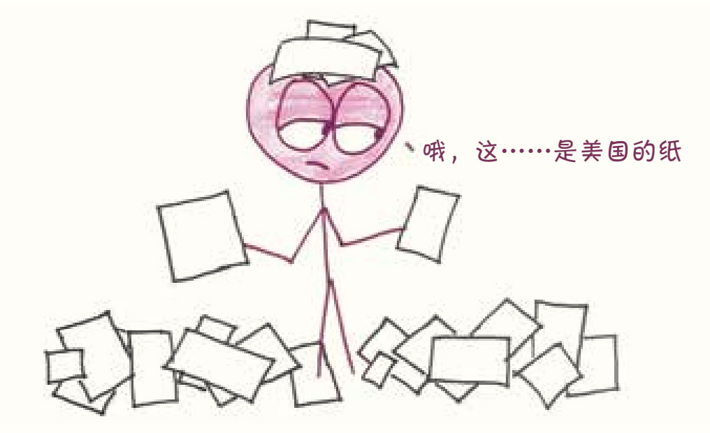
相较之下，全球标准下的纸张就像地球本身，是一个整体，每个部分都相互关联。A4纸属于一个统一的纸张系列。这一系列纸的大小不同，但长宽比例完全相同3。
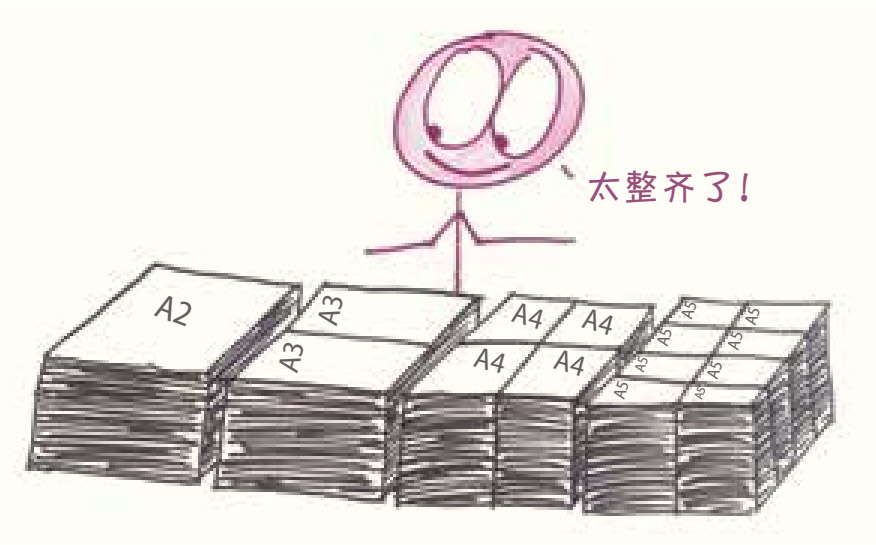
对于在意纸张大小的人来说，这无疑是件好事。假如你是个数学老师，就可以完整又不浪费地把两页纸的内容压缩到一张纸上，反过来，只要把两页A4纸拼在一起，就恰好能容纳一个A3大小的表格。那些流连于海滩、酒吧和法国餐馆的人也许很难体会到这个设计的妙处，但对于纸张爱好者来说，这简直太棒了，这样的纸张尺寸再合理不过。
我明白了这一点后，顿时豁然开朗：这个√2的错误根本不是错误，而是不可避免的事实——因为让长宽比等于√2，是唯一能让这套神奇的“俄罗斯套娃”纸张系统正确运行的方法。
想知道原因吗？一起来想象这个比例诞生的场景吧。
格温和斯文是两位造纸行业的美女科学家，她们正在进行一项绝密的研究项目。项目有一个代号，大概是“小王纸”或“迷金醉纸”之类的，在她们的异域口音中听起来很是神秘。天色已经很暗了，早已疲惫不堪的她们仍在拼命工作。
格温：斯文，剧本里没写我们的国籍，但我们的工作关系着全世界人类文明共同的命运。我们要研究出尺寸不同的系列纸张，创造一套完美的纸张系统，在这个系统中，对折任意尺寸的纸都能正好得到小一号尺寸的纸。
斯文：此事非同小可，我们一定要完成自己的使命。那么格温，这些纸张的尺寸应该是多大呢？
格温：要弄清楚它们的尺寸，只有一个办法。
格温果断地对折了一张纸，并给三个相关长度做了记号：分别是“长”（原始纸张的长度），“中”（原始纸张的宽度）和“短”（对折后纸张的宽度）。
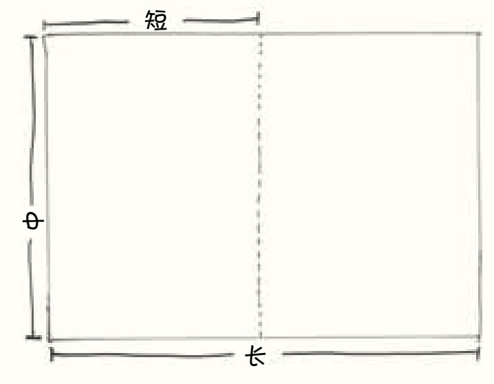
格温：现在，“长”和“中”的比值是多少呢？
斯文：这就是我们想知道的。
格温：那“中”和“短”的比值又是多少呢？
斯文：拜托，格温，你到底想说什么？我们都知道这两个比值应该是一样的，但就是不知道它的数值到底是多少啊。（空气仿佛凝固了，实验室里的气氛紧张了起来）
格温(沉默片刻）：行吧，我们暂且假设“中”的长度是“短”的r倍。
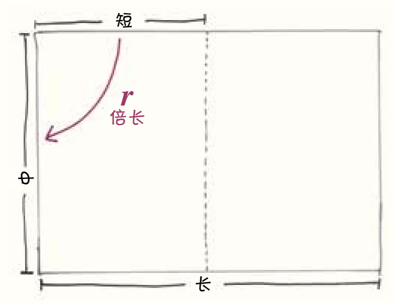
斯文：可r是多少？
格温：我还不知道。我只知道它大于1但小于2，因为“中”比“短”长，但又没有两倍那么长。
斯文：好吧，按照你的假设，“长”的长度也是“中”的r倍了。
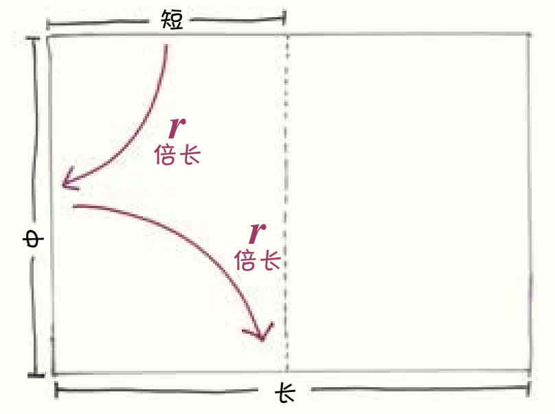
格温：所以如果想把“短”变成“长”，必须先乘以r得到“中”后再乘以r，也就是说，“短”要乘以r2才能得到“长”。
斯文（恍然大悟）：你真是个集美貌和智慧于一身的天才——格温，你把比例解出来了！
格温：我解出来了吗？
斯文：“长”的长度是“短”的r2倍，你看，同时它的长度也是“短”的2倍！
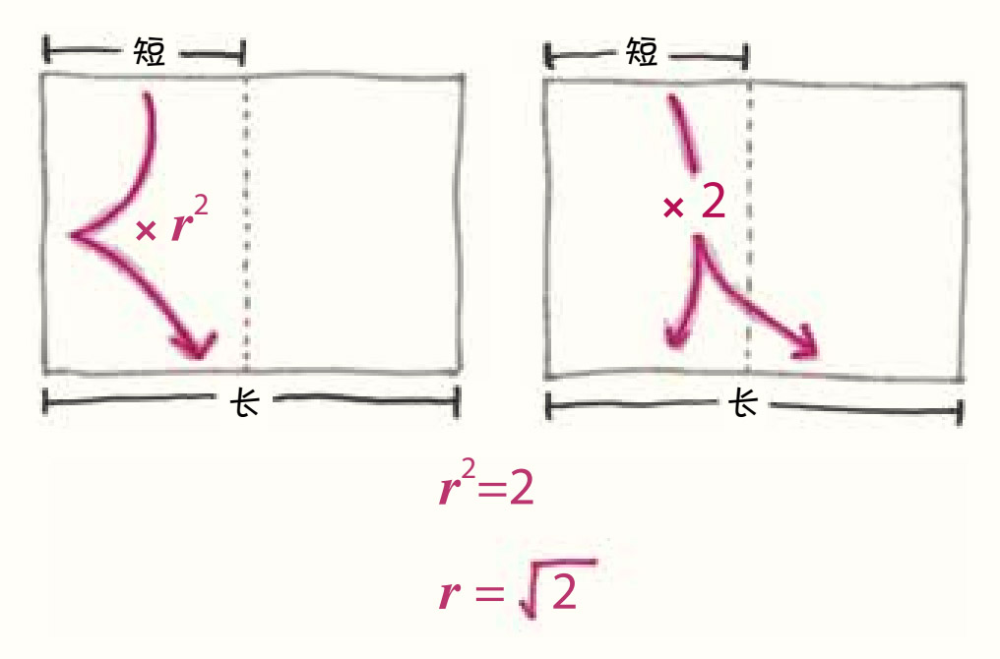
格温：对哦，你说得没错……那么，这就意味着……
斯文：是的，r2就等于2。
格温：所以r就是2的平方根！这就是折磨人类这么久的秘密比例！
斯文（声音突然变得阴森）：格温，告诉我，这个比例是多少？
格温：斯文，你怎么了？为什么拿着枪？
想象完这个场景后，我完全释怀了，A4纸的制造商之所以选择了这个让人心烦的比值，并不是为了针对我，也不是为了叫板审美潮流或者美国霸权，更不是故意选了一个无理数以满足恶趣味。
事实上，他们根本没有选择。
他们的目的只是创造这样的一个纸张系统：在这个系统中，把一种尺寸的纸对折后就能得到下一种尺寸的纸，这样的系统不但非常实用，而且差错率很低。然而，在他们决心创造这个系统后，对纸张比例的决定权就不在他们手中了，因为只有一个比例能拥有这个特性——恰好是著名的无理数√2。
我们都喜欢把纸张设计师想象成无拘无束的幻想家，仿佛他们受到的唯一限制就是自己的想象力。其实现实要有趣得多。设计师在一个可能性的空间中漫步，这个空间是由逻辑和几何学控制的，很多事不可改变，比如说，有些数字生来就是有理数，而另一些数字注定是无理数。设计师不但对此无能为力，还必须想方设法绕过这些障碍——能将它们化为己用当然就更好了，就像建筑师也需要设计与周围环境和谐一致的建筑。
至于这个故事的结局，我就长话短说了：我对A4纸完全改变了看法。我已经知道造纸商们追求√2这个比例的原因，他们无法精确地实现长宽比为√2的这个事实已经不再让我感到困扰。说实话，我现在看A4纸更顺眼些，信纸看起来有点儿老气，还有点儿胖。
我似乎已经完成了从一个极端到另一个极端的转变，我曾经坚决捍卫自己的民族习俗，但现在使劲鼓吹外国的民族习俗。这些天我喝的焦糖拿铁也少了，不过呢——就像信纸一样——我是不会完全放弃这个习惯的。